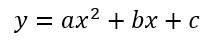
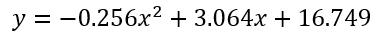
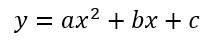
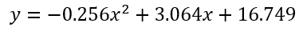
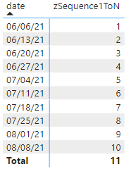
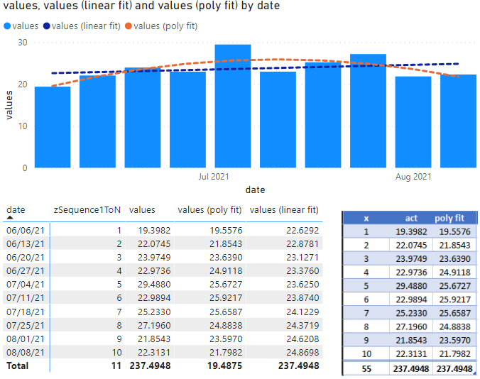

Last Update: Feb 2022 (new format in progress Aug 2022)
If you're here looking to build some polynomial regression curves for some data, I'm sure I do not need to explain why they can be helpful when analyzing your data. I found myself in a situation like this recently, where I needed to replicate some excel charts in a Power BI (PBI) report. Pretty easy to do since I already most of the data set up, however this chart had both a linear regression line and a 2nd order polynomial regression line. As in the example, each of these regression lines told different stories about what was happening about the data in question.
As anyone developing PBI reports for a company will surely know, building the reports is useless if people don't use them - and even more so if the exact same analysis is being performed in excel. This screenshot (a screenshot of a PowerPoint presentation from a Teams meeting), is one such example. I did not have any kind of useful trend lines for use in my PBI report, so Excel (naturally) came to the rescue.
By default, Power BI does include the capability to add a trend line to your data, which definitely is handy. However, the customization is quite limited meaning there are quite a few drawbacks with using the built in lines. You're out of luck if: You have more than one series in the chart but you only want one series to have a trend line You want to use any other kind of regression other than linear (higher order, exponential, logarithmic, etc.)
After some quick research, I found an example that works quite nicely for calculating a simple linear regression. Conveniently, this will also provide us with a template to start from when building up our higher order regression. From that link, we find two additional reasons to consider using a calculated trend line instead of the automatic ones provided by the visual:
There are at least two reasons to consider calculated trend lines: 1. With the built-in trend line, you can only infer its values from the Y axis, while the calculated trend line allows you to see the values explicitly [through a tooltip, for example] 2. As of September 2017, Power BI allows you to only add trend lines for numeric or datetime axes. As soon as you use strings (month names, for instance), you lose the ability to add trend lines. With simple linear regression, you can calculate them yourself, as long as you have sequential numeric values to use as known X values
Again, after some quick research, no examples appeared. Uh oh. That means we'll have to go back to basics and do it the old fashioned way: ourselves.
Having been years since I had last attempted to do any kind of math at this level, my plan (was at the time and also through the rest of this post) is as follows:
I'll use the process outlined here, which I found particularly helpful in explaining everything clearly and mostly all in one place with some examples. No matter what polynomial you want to model, the fundamental process is the same, but the math gets more complex the more orders you want to use. From that link:
"We wish to find a polynomial function that gives the best fit to a sample of data. We will consider polynomials of degree n, where n is in the range of 1 to 5. In other words we will develop techniques that fit linear, quadratic, cubic, quartic and quintic regressions. In fact, this technique will work for any order polynomial."
To start with, let's use some sample data I borrowed from my project:
| Date | Value |
|---|---|
| 6/6/2021 | 19.39817 |
| 6/13/2021 | 22.07447 |
| 6/20/2021 | 23.97487 |
| 6/27/2021 | 22.97359 |
| 7/4/2021 | 29.48796 |
| 7/11/2021 | 22.9894 |
| 7/18/2021 | 25.23303 |
| 7/25/2021 | 27.19599 |
| 8/1/2021 | 21.85426 |
| 8/8/2021 | 22.31307 |
Future me interjecting here on behalf of current you - this next step will save you a lot of time validating and troubleshooting results. After making my way most of the way through this process getting regression equations that continually differed from the ones excel was returning on the chart, I played around with the data and tried it on a variety of chart times. After a bit, I figured out the reason why my regression calculations were differing from the equation automatically calculated for the chart. As it turns out, excel "masks" all of the x values with the number 1-n. Try it out. In excel, replace the x values with a sequence 1-n and you will notice that the regression equation does not change, despite the x values being a key component in those calculations. The difference happens when plotting your values on any kind of line graph/bar graph, etc., as opposed to a scatter plot. In the other charts (line/bar/etc.) there is one independent variable and one dependent variable. There are two independent variables in a scatter plot, meaning it "matters" exactly what the x values are. You can replace the values in a bar/line graph with values spaced apart the same distance relatively, and you'd get the same result. Essentially, you are changing the numerical values of the x axis, so the values of 6/6/21 (44353) to 6/13/21 (44360) is masked with 1 to 2. While the numbers changed, the relative spacing between each data point did not, which is the important characteristic for these charts. Additionally, its a lot easier to cube a number like 10 (10^3 = 10000) than it is to cube a date like 8/16/21 (44424^3 = 8.67704E+13), where we can really easily run into uncaptured rounding or truncation issues, especially in excel. Multiplying smaller numbers also means easier and quicker calculations, something to consider if you will apply this to 100s or 1000s of data points). End of helpful interjection. You may proceed with the regularly scheduled explanation.
To start with, first put together the summary measures multiplying x and y values together in different ways. Simple enough.
Note: for display purposes, all values are truncated to two decimal points, not rounded.

With all of those measures computed, we can assemble our matrix M. From a mathematical perspective, this is skipping quite a few steps to get here (as detailed here), but there's really no reason to model those, as this is a convenient starting point to use anyways.

I found an explanation that I like to help find the inverse of a 3x3 matrix, which we ultimately need to do to compute the regression equation. The first step to finding the inverse of the matrix we just built in the previous step involves computing the minor of the matrix. For each row and column, cross out the current row and column and take the determinant of the remaining 2x2 matrix.

Next, negate the value of alternating positions; this results in the cofactor matrix.

Next, simply transpose the matrix - switch all the rows to columns and the columns to rows. Because of the way our matrix is set up and which values are in which position, this likely will not look any different than before.

As a precursor for step 4, we'll need to find the determinant of our original 3x3 matrix. This is straightforward for a 2x2 matrix, but more complex for 3x3. Basically, for each column in the 3x3, we need to compute the determinant of the 2x2 matrix not including that column, and then add them together.

For the final step in finding the inverse, divide the transposed matrix by the determinant. This is our inverse of M, or M^-1.

We are now very close to the end of the process. Build up the y^ matrix with the basic summary measurements from the first step.

Lastly, multiply M'M^-1 and M'y^ together to find our coefficients for the regression equation, c, b, and a.
A quick check to verify that these are correct (at least according to how excel calculates them) shows that we're ok.
 



Using the same template for the linear regression I previously linked, let's port the formulas and measures into a format useful in power bi. For the sake of this exercise, we have a dates table, and our data is located in a second table with a date field related to the dates table. As mentioned before, unless you're plotting a scatter plot, you need to create a list of your "masked" x values from 1 to n to use for calculations. For that, let's create the first measure.
zSequence1ToN = RANKX(ALLSELECTED(_Calendar13Month[End of Week]),CALCULATE(MAX(_Calendar13Month[End of Week])),,ASC)
RANKX is a handy function that allows us to rank the values in a table against some other criteria. In this instance, however, we want to rank the values in the dates table by themselves (aka in the order they appear). We do not necessarily want to rank all of the rows in the dates table, only the rows in the current context. If there is some sort of page or visual filter or slicer to narrow down our criteria, we always want to start counting whatever the first x data point is at 1, i.e., instead of ranking all of the rows, we only want to rank only the selected rows (ALLSELECTED), against some aggregation of the entire column. As an example, we have a filter to only show the dates between 6/6/2021 and 8/8/21 - 6/6/21 is the first date value "visible" in the current context, so we want 6/6/2021 to be number 1, instead of 1/1/2000 (which is the first value in the dates table). Within the calculation, it does not matter which aggregation is used for the date (sum, max, or min are all valid), though I chose to use max here for clarity.
Add this to a table, and you get a nice list of numbers 1 to n. Set this aside. It will come in handy later on for testing and validation reasons.
In a similar style, we only want to calculate the measures listed above (sumOfYs, sumOfX2, sumOfX3, etc) for the rows in the current context, not all of the rows in the data set. Let's create a new measure for our polynomial fit equation. In that measure, start by adding a new variable called Known. Known will be a table with three columns: the currently selected dates, our selected x's (1-n) and the y's that accompany the selected dates (by "selected", I mean in the current context).
var Known =
SELECTCOLUMNS (
ALLSELECTED(_Calendar13Month[End of Week]),
"KnownX", [zSequence1ToN],
"KnownY", [Std Lbs / Lbr Hr act]
)
Creating a table with these values also allows us to more easily reference the columns later on in the same measure, including multiplying them by each other. Adding the selected dates to this new table creates a "link" to the filtering in the rest of the report - i.e., when the [End of Week] field is filtered elsewhere in the report via an applied filter to the visual or a slicer, the Known table will also correspondingly filter the rows with the End of Week dates, and thus the KnownX and KnownY rows are filtered too.
Add in the other basic measures as explained above.
var sumOfXs = SUMX(Known, [KnownX])var sumOfYs = SUMX(Known, [KnownY])var sumOfXs = SUMX(Known, [KnownX])var sumOfYs = SUMX(Known, [KnownY])var sumOfX2 = SUMX(Known, [KnownX] ^ 2)var sumOfX3 = SUMX(Known, [KnownX] ^ 3)var sumOfX4 = SUMX(Known, [KnownX] ^ 4)var sumOfXY = SUMX(Known, [KnownX] * [KnownY])var sumOfX2Y = SUMX(Known, [KnownX] ^ 2 * [KnownY])var determinant = countItems*((sumOfX2*sumOfX4)-(sumOfX3*sumOfX3))-sumOfXs*((sumOfXs*sumOfX4)-(sumOfX2*sumOfX3))+sumOfX2*((sumOfXs*sumOfX3)-(sumOfX2*sumOfX2))With the base measures established, we can begin to build the inverse matrix. The work I spent doing things ahead of time in Excel really helps here, because we can shortcut many sub steps and skip straight for the final inverse matrix. I created one variable for each position in the 3x3 matrix; they can be named whatever you want but I decided to name them based on their row and column position in the matrix.
//Calculate the inverse matrix (combining a few steps together)
var M11 = ((sumOfX2*sumOfX4)-(sumOfX3*sumOfX3))/determinant
var M12 = -((sumOfXs*sumOfX4)-(sumOfX3*sumOfX2))/determinant
var M13 = -((sumOfX2*sumOfX2)-(sumOfXs*sumOfX3))/determinant //there was an error on this line i had to add a negative to fix. no idea why. EVERY other var evaluates correctly.
var M21 = -((sumOfXs*sumOfX4)-(sumOfX2*sumOfX3))/determinant
var M22 = ((countItems*sumOfX4)-(sumOfX2*sumOfX2))/determinant
var M23 = -((countItems*sumOfX3)-(sumOfXs*sumOfX2))/determinant
var M31 = ((sumOfXs*sumOfX3)-(sumOfX2*sumOfX2))/determinant
var M32 = -((countItems*sumOfX3)-(sumOfX2*sumOfXs))/determinant
var M33 = ((countItems*sumOfX2)-(sumOfXs*sumOfXs))/determinant
Calculating the coefficients a, b, and c is now pretty straightforward matrix multiplication.
//Assuming equation of: a*x^2 + b*x + c
var c = M11*sumOfYs+M12*sumOfXY+M13*sumOfX2Y
var b = M21*sumOfYs+M22*sumOfXY+M23*sumOfX2Y
var a = M31*sumOfYs+M32*sumOfXY+M33*sumOfX2Y
Lastly creating the equation to return the correct values back to your table or chart is as simple as multiplying the coefficients to the masked x values.
RETURN
a*[zSequence1ToN]^2+b*[zSequence1ToN]+cWith everything put together, the full measure might look like the following:
Value (poly fit) =
// Reference: https://www.thedatascientists.com/polynomial-regression/
// https://metric.ma.ic.ac.uk/metric_public/matrices/inverses/inverses2.html
// https://noahseveryn.weebly.com/regression-for-power-bi.html
// Because our Xs (dates) and Ys (measures) are in different tables, we have to temporarily create a new table (Known) with both of those values so we can perform SUMX operations easily.
// To get the same polynomial fit as excel, the x values in the calculation are masked over with 1 thru n. Thus x-values in the calc are n+1-min(n)
var countItems = COUNTROWS(ALLSELECTED(_Calendar13Month[End of Week]))
var Known =
SELECTCOLUMNS (
ALLSELECTED(_Calendar13Month[End of Week]),
"KnownX", [zSequence1ToN],
"KnownY", [Std Lbs / Lbr Hr act]
)
var sumOfXs = SUMX(Known, [KnownX])
var sumOfYs = SUMX(Known, [KnownY])
var sumOfX2 = SUMX(Known, [KnownX] ^ 2)
var sumOfX3 = SUMX(Known, [KnownX] ^ 3)
var sumOfX4 = SUMX(Known, [KnownX] ^ 4)
var sumOfXY = SUMX(Known, [KnownX] * [KnownY])
var sumOfX2Y = SUMX(Known, [KnownX] ^ 2 * [KnownY])
var determinant = countItems*((sumOfX2*sumOfX4)-(sumOfX3*sumOfX3))-sumOfXs*((sumOfXs*sumOfX4)-(sumOfX2*sumOfX3))+sumOfX2*((sumOfXs*sumOfX3)-(sumOfX2*sumOfX2))
//Calculate the inverse matrix (combining a few steps together)
var M11 = ((sumOfX2*sumOfX4)-(sumOfX3*sumOfX3))/determinant
var M12 = -((sumOfXs*sumOfX4)-(sumOfX3*sumOfX2))/determinant
var M13 = -((sumOfX2*sumOfX2)-(sumOfXs*sumOfX3))/determinant //there was an error on this line i had to add a negative to fix. no idea why. EVERY other var evaluates correctly.
var M21 = -((sumOfXs*sumOfX4)-(sumOfX2*sumOfX3))/determinant
var M22 = ((countItems*sumOfX4)-(sumOfX2*sumOfX2))/determinant
var M23 = -((countItems*sumOfX3)-(sumOfXs*sumOfX2))/determinant
var M31 = ((sumOfXs*sumOfX3)-(sumOfX2*sumOfX2))/determinant
var M32 = -((countItems*sumOfX3)-(sumOfX2*sumOfXs))/determinant
var M33 = ((countItems*sumOfX2)-(sumOfXs*sumOfXs))/determinant
//Assuming equation of: a*x^2 + b*x + c
var c = M11*sumOfYs+M12*sumOfXY+M13*sumOfX2Y
var b = M21*sumOfYs+M22*sumOfXY+M23*sumOfX2Y
var a = M31*sumOfYs+M32*sumOfXY+M33*sumOfX2Y
RETURN
a*[zSequence1ToN]^2+b*[zSequence1ToN]+cTo prove it works correctly, you can return each coefficient one at a time (instead of the whole final equation) and compare each part to to excel, or add this measure into a matrix visual and compare the results. Check that you are getting the same result as excel - everything looks good here! In this case, a second order polynomial line gives us a much better idea of the trends of our data, especially when compared to just a linear regression line.
As we wrote it, the measure is ultimately very modular and easy to reuse multiple times - simply swap in your desired measure for "Known Y" and go. The ALLSELECTED parts will automagically pick up the current row contexts applied to the specific visual the measure is in and adapt accordingly, meaning you can use the same measure in charts at the same time with two different time periods and have different results.
I have attached the sample excel and pbix files below which I used to develop the process and test out the data. If you are interested in understanding things step by step, feel free to have a look. Otherwise, just use the measure. Either way, I hope you found this helpful! :)